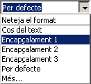
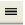
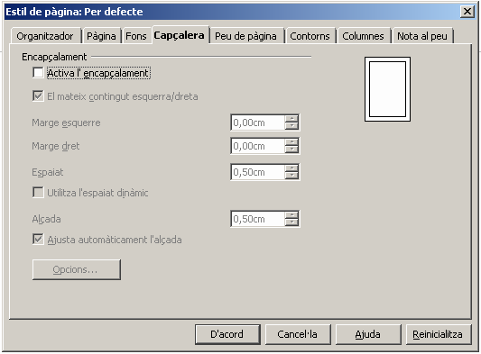
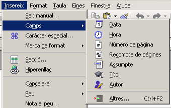
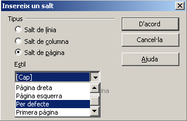
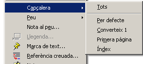

Capçaleres, peus de pàgina i paginació
Les capçaleres i peus de pàgina són àrees situades en els marges superior i inferior de les pàgines en les quals s'hi pot afegir text o imatges. També s'hi poden afegir camps, com ara els números de pàgina.
Recupereu el següent document: la cèl·lula.odt , tema de Naturals a 6è de Primària.
1.- Doneu forma al document:
-
Utilitzeu els estils encapçalament 1, encapçalament 2 per fer els títols i subtítols.
-
Seleccioneu el títol.
-
Desplegueu l'eina aplica l'estil i seleccioneu l'estil adient per a cada un.
-

-
Seleccioneu els paràgrafs i canvieu la lletra Arial per la que vosaltres desitgeu.
-
Sense treure la selecció, activeu l'eina  justifica per justificar tot el document.
2.- Inseriu-hi una capçalera
Seleccioneu Insereix|Capçalera|Per defecte.

També ho podeu demanar a Format|Pàgina|Capçalera.

-
Si ho feu d'aquesta manera cal deixar en blanc la casella de verificació el mateix contingut esquerra/dreta, si el que es vol és definir les capçaleres i els peus de pàgina diferents per a les pàgines senars i parells. En cas contrari, cal activar-la.
-
Les dimensions, en horitzontal, de la capçalera o el peu de pàgina es poden definir actuant sobre els controls Marge esquerre i Marge dret, bé escrivint el valor directament, o actuant sobre les fletxes del control per augmentar-ne o disminuir-ne el valor.
-
La casella Ajusta automàticament l'alçada, quan està activada, fa que l'alçada de la capçalera o del peu de pàgina, variï en funció del contingut que s'hi afegeixi. En cas contrari, no canvia.
3.- Escriviu dins la capçalera el títol del tema: La Cèl·lula i l'àrea: Naturals. Utilitzeu la icona centrar . Utilitzeu el tipus de lletra que més us agradi.
4.- Inseriu-hi un peu de pàgina.
Seleccioneu Insereix|Peu de pàgina|Per defecte. També ho podeu fer de la mateixa manera que la capçalera: Format|Pàgina|Peu de pàgina.
5.- Pagineu el document a la part central del peu de pàgina. Aneu al menú Insereix|Camps|Número de pàgina.

-
Un cop inserit se li pot donar format com qualsevol altre fragment de text (tipus de lletra, grandària, estil, alineació, …). Per fer-ho cal seleccionar el camp corresponent al número de pàgina i, posteriorment, assignar-li el format desitjat.
6.- Deseu el document amb el nom de celula.odt
Capçaleres i peus de pàgina diferents
Pot ser que tinguem documents en què voldríem posar capçaleres i/o peus de pàgina diferents segons l'apartat o secció. Per tal de poder-ho fer, haurem d'haver inserit salts de pàgina en el document.
-
Obriu el document celula.odt que heu guardat en l'exercici anterior.
-
Situeu-vos a l'inici del document i inseriu-hi un salt de pàgina.
-
Insereix | Salt manual…| Salt de pàgina activant Estil per defecte.
-
-
Torneu a inserir un altre salt de pàgina amb les mateixes característiques.
-
Veureu que es conserva l'encapçalament i canvia el número de pàgina.
-
-
Situeu-vos en la primera pàgina i feu en el menú Estils | Estils i formatació.Feu doble clic a l'estil Primera pàgina.
-
Observeu com desapareix la capçalera i el número de pàgina.
Situeu-vos en la segona plana i feu doble clic a índex.-
Observeu com desapareix també la capçalera i el peu de pàgina que hi havia.
Si ara inseriu una capçalera, veureu que podeu escollir en quines planes la voleu segons l'estil aplicat. Deixeu la primera plana sense capçalera; com a peu de pàgina escriviu el vostre nom alineat a la dreta.A la segona plana, la de l'índex, poseu com a capçalera la paraula Índex amb negreta, centrat i lletra Comic Sans de 24 punts. No hi poseu peu de pàgina.Comproveu que la resta de document queda amb la capçalera que tenia i numerat en el peu de pàgina.Deseu el document amb el nom celula_2.odt
Ara veurem com poder numerar un document sense necessitat de començar pel número 1.
-
Situeu-vos a l'inici de la pàgina que voleu numerar de forma diferent.
-
Aneu a Format | Paràgraf… | Flux del text i en la secció del mig marqueu Insereix i estil de pàgina, després escriviu el número de pàgina pel qual voleu que comenci.
-
Feu proves amb el document de la celula_2.odt que heu guardat en l'exercici anterior.

|
|

|
|